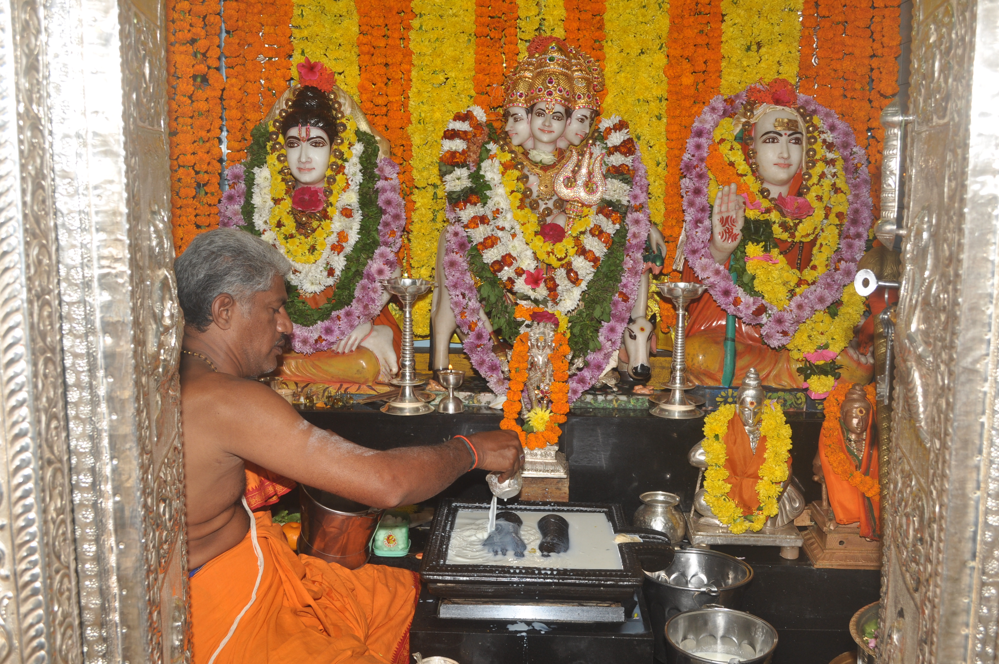

Daily Pooja
9:00 a.m.
Abhishekam
Panchamurta Abhisheka Sahita Ashotottra Pooja
Lord Dattatreya is the embodiment of 'Trimurthis'. Abhishekams with Panchamrutham (Cow Milk, Cow Curd, Cow Ghee, Honey and Sugar) are performed. As the Lord is fond of Abhishekams, Rudra Namaka Chamakam is also recited.
The first incarnation of Dattatreya is Sripada Srivallabha. By performing this Seva, Devotees are blessed with the Lord's Anugraha and their desires and wishes will be fulfilled.